19.1 Trees
All of us have a family tree. One way to draw a family tree is to add an element every time a child is born and to connect the elements of the father and mother. For those people whose parents are unknown, there is no connection to draw. The result is an ancestor family tree because, given any person, the tree points to all of the person’s known ancestors.
Figure 111 displays a three-tier family tree. Gustav is the child of Eva and Fred, while Eva is the child of Carl and Bettina. In addition to people’s names and family relationships, the tree also records years of birth and eye colors. Based on this sketch, you can easily imagine a family tree reaching back many generations and one that records other kinds of information.
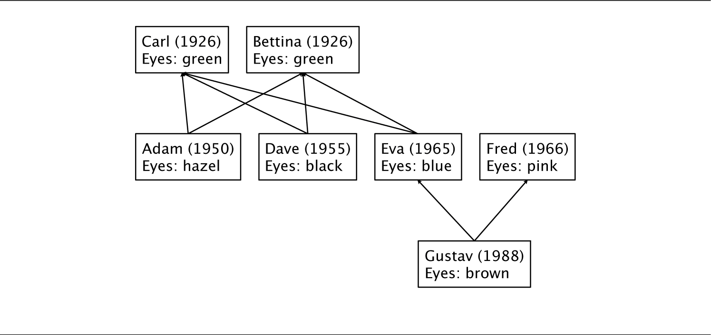
Figure 111: A family tree
Once a family tree is large, it makes sense to represent it as data and to design programs that process this kind of data. Given that a point in a family tree combines five pieces of information—the father, the mother, the name, the birth date, and the eye color—we should define a structure type:
(define-struct child [father mother name date eyes])
The structure type definition calls a data definition:
; A Child is a structure:
; (make-child Child Child String N String)
While this data definition looks straightforward, it is also useless. It refers to itself, but, because it doesn’t have any clauses, there is no way to create a proper instance Child. Roughly, we would have to write
(make-child (make-child (make-child …) …) …)
without end. To avoid such pointless data definitions, we demand that a self-referential data definition have several clauses and that at least one of them does not refer back to the data definition.
Let’s postpone the data definition for a moment, and experiment instead. Suppose we are about to add a child to an existing family tree and that we already have representations for the parents. In that case, we can simply construct a new child structure. For example, to represent Adam in a program that already represents Carl and Bettina, it suffices to add the following child structure:
(define Adam
(make-child Carl Bettina "Adam" 1950 "hazel"))
assuming Carl and Bettina stand for representations of Adam’s parents.
Then again, a person’s parents may be unknown, like Bettina’s in the family tree of figure 111. Yet, even then, we must fill the corresponding parent field(s) in the child representation. Whatever data we choose, it must signal an absence of information. On the one hand, we could use #false, "none", or '() from the pool of existing values. On the other hand, we should really say that the information is missing from a family tree. We can achieve this objective best with the introduction of a structure type with an appropriate name:
(define-struct no-parent [])
Now, to construct a child structure for Bettina, we say
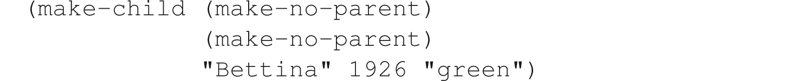
Of course, if only one piece of information is missing, we fill just that field with this special value.
Our experimentation suggests two insights. First, we are not looking for a data definition that describes how to generate instances of child structures but for a data definition that describes how to represent family trees. Second, the data definition consists of two clauses, one for the variant describing unknown family trees and another one for known family trees:
(define-struct no-parent [])
(define-struct child [father mother name date eyes])
; An FT (short for family tree) is one of:
; -- (make-no-parent)
; -- (make-child FT FT String N String)
Since the “no parent” tree is going to show up a lot in our programs, we define NP as a short-hand and revise the data definition a bit:
(define NP (make-no-parent))
; An FT is one of:
; -- NP ;
-- (make-child FT FT String N String)
Following the design recipe from chapter 9, we use the data definition to create examples of family trees. Specifically, we translate the family tree in figure 111 into our data representation. The information for Carl is easy to translate into data:
(make-child NP NP "Carl" 1926 "green")
Bettina and Fred are represented with similar instances of child. The case for Adam calls for nested children, one for Carl and one for Bettina:
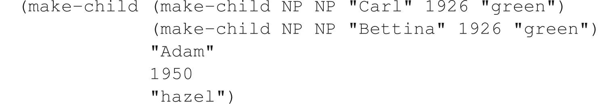
Since the records for Carl and Bettina are also needed to construct the records for Dave and Eva, it is better to introduce definitions that name specific instances of child and to use the variable names elsewhere. Figure 112 illustrates this approach for the complete data representation of the family tree from figure 111. Take a close look; the tree serves as our running example for the following design exercise.
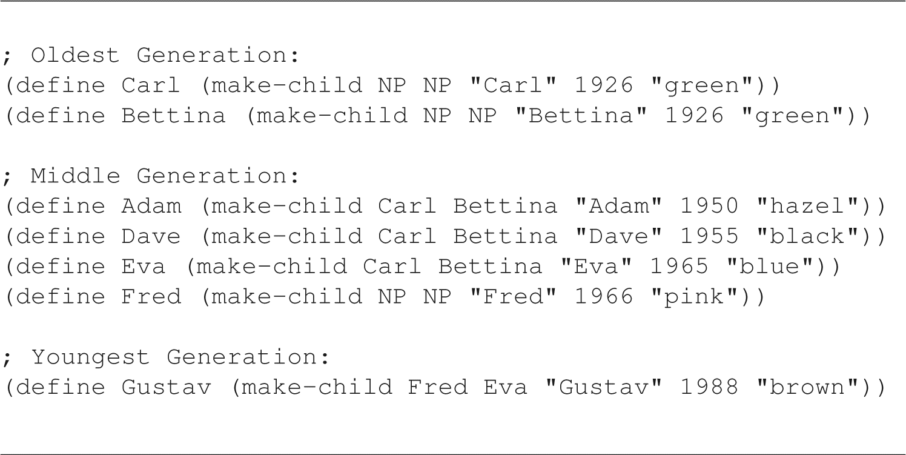
Figure 112: A data representation of the sample family tree
Instead of designing a concrete function on family trees, let’s first look at the generic organization of such a function. That is, let’s work through the design recipe as much as possible without having a concrete task in mind. We start with the header material, that is, step 2 of the recipe:
; FT -> ???
; …
(define (fun-FT an-ftree) …)
Even though we aren’t stating the purpose of the function, we do know that it consumes a family tree and that this form of data is the main input. The “???” in the signature says that we don’t know what kind of data the function produces; the “⋯” remind us that we don’t know its purpose.
The lack of purpose means we cannot make up functional examples. Nevertheless, we can exploit the organization of the data definition for FT to design a template. Since it consists of two clauses, the template must consist of a cond expression with two clauses:
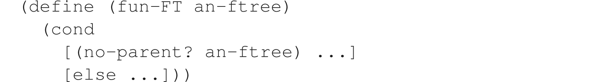
In case the argument to fun-FT satisfies no-parent?, the structure contains no additional data, so the first clause is complete. For the second clause, the input contains five pieces of data, which we indicate with five selectors in the template:
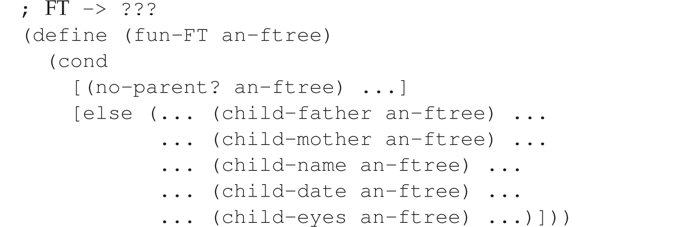
The last addition to templates concerns self-references. If a data definition refers to itself, the function is likely to recur and templates indicate so with suggestive natural recursions. The definition for FT has two self-references, and the template therefore needs two such recursions:
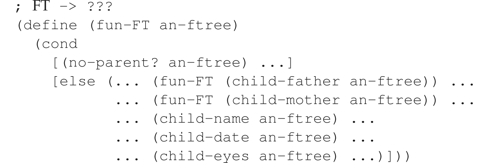
Specifically, fun-FT is applied to the data representation for fathers and mothers in the second cond clause because the second clause of the data definition contains corresponding self-references.
Let’s now turn to a concrete example, the blue-eyed-child? function. Its purpose is to determine whether any child structure in a given family tree has blue eyes. You may copy, paste, and rename fun-FT to get its template; we replace “???” with Boolean and add a purpose statement:
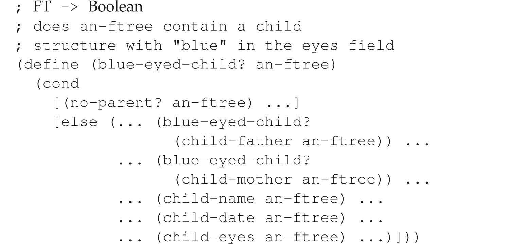
When you work in this fashion, you must replace the template’s generic name with a specific one.
Checking with our recipe, we realize that we need to backtrack and develop some examples before we move on to the definition step. If we start with Carl, the first person in the family tree, we see that Carl’s family tree does not contain a child with a "blue" eye color. Specifically, the child representing Carl says the eye color is "green"; given that Carl’s ancestor trees are empty, they cannot possibly contain a child with "blue" eye color:
(check-expect (blue-eyed-child? Carl) #false)
In contrast, Gustav contains a child for Eva who does have blue eyes:
(check-expect (blue-eyed-child? Gustav) #true)
Now we are ready to define the actual function. The function distinguishes between two cases: a no-parent and a child. For the first case, the answer should be obvious even though we haven’t made up any examples. Since the given family tree does not contain any child whatsoever, it cannot contain one with "blue" as the eye color. Hence the result in the first cond clause is #false.
For the second cond clause, the design requires a lot more work. Again following the design recipe, we first remind ourselves what the expressions in the template accomplish:
1. according to the purpose statement for the function,
(blue-eyed-child? (child-father an-ftree))
determines whether some child in the father’s FT has "blue" eyes;
2. likewise, (blue-eyed-child? (child-mother an-ftree)) determines whether someone in the mother’s FT has blue eyes; and
3. the selector expressions (child-name an-ftree), (child-date an-ftree), and (child-eyes an-ftree) extract the name, birth date, and eye color from the given child structure, respectively.
Now we just need to figure out how to combine these expressions.
Clearly, if the child structure contains "blue" in the eyes field, the function’s answer is #true. Next, the expressions concerning names and birth dates are useless, which leaves us with the recursive calls. As stated, (blue-eyed-child? (child-father an-ftree)) traverses the tree on the father’s side, while the mother’s side of the family tree is processed with (blue-eyed-child? (child-mother an-ftree)). If either of these expressions returns #true, an-ftree contains a child with "blue" eyes.
Our analysis suggests that the result should be #true if one of the following three expressions is #true:
• (string=? (child-eyes an-ftree) "blue")
• (blue-eyed-child? (child-father an-ftree))
• (blue-eyed-child? (child-mother an-ftree))
which, in turn, means we need to combine these expressions with or:
(or (string=? (child-eyes an-ftree) "blue")
(blue-eyed-child? (child-father an-ftree))
(blue-eyed-child? (child-mother an-ftree)))
Figure 113 pulls everything together in a single definition.
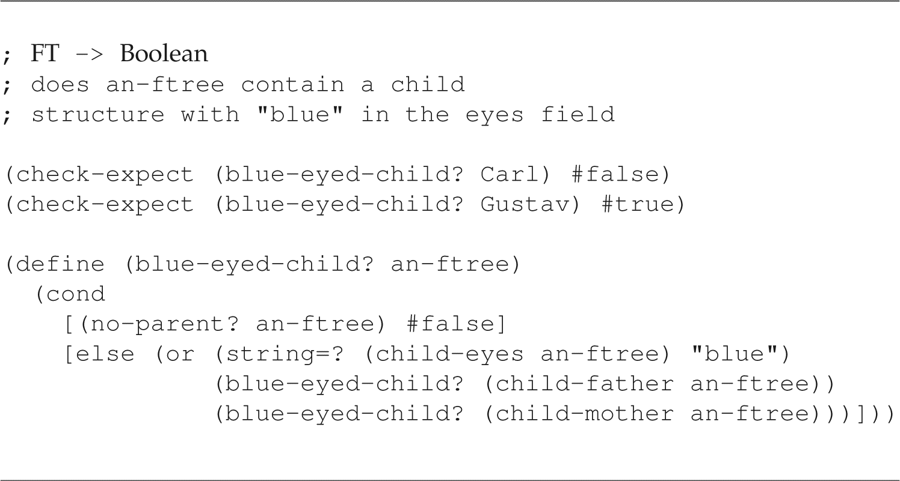
Figure 113: Finding a blue-eyed child in an ancestor tree
Since this function is the very first one to use two recursions, we simulate the stepper’s action for (blue-eyed-child? Carl) to give you an impression of how it all works:
(blue-eyed-child? Carl)
==
(blue-eyed-child?
(make-child NP NP "Carl" 1926 "green"))
Let’s act as if NP were a value and let’s use carl as an abbreviation for the instance of child:
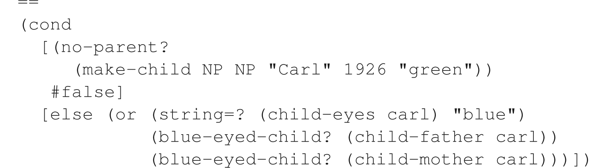
After dropping the first cond line, it’s time to replace carl with its value and to perform the three auxiliary calculations in figure 114. Using these to replace equals with equals, the rest of the computation is explained easily:
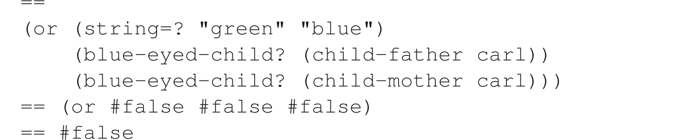
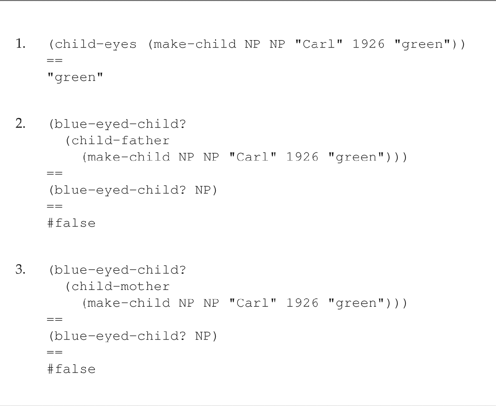
Figure 114: Calculating with trees
While we trust that you have seen such auxiliary calculations in your mathematics courses, you also need to understand that the stepper would not perform such calculations; instead it works out only those calculations that are absolutely needed.
Exercise 310. Develop count-persons. The function consumes a family tree and counts the child structures in the tree. 
Exercise 311. Develop the function average-age. It consumes a family tree and the current year. It produces the average age of all child structures in the family tree.
Exercise 312. Develop the function eye-colors, which consumes a family tree and produces a list of all eye colors in the tree. An eye color may occur more than once in the resulting list. Hint Use append to concatenate the lists resulting from the recursive calls.
Exercise 313. Suppose we need the function blue-eyed-ancestor?, which is like blue-eyed-child? but responds with #true only when a proper ancestor, not the given child itself, has blue eyes.
Although the goals clearly differ, the signatures are the same:
; FT -> Boolean
(define (blue-eyed-ancestor? an-ftree) …)
Stop! Formulate a purpose statement for the function.
To appreciate the difference, we take a look at Eva:
(check-expect (blue-eyed-child? Eva) #true)
Eva is blue-eyed, but has no blue-eyed ancestor. Hence,
(check-expect (blue-eyed-ancestor? Eva) #false)
In contrast, Gustav is Eva’s son and does have a blue-eyed ancestor:
(check-expect (blue-eyed-ancestor? Gustav) #true)
Now suppose a friend comes up with this solution:
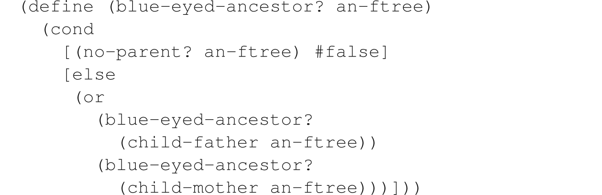
Explain why this function fails one of its tests. What is the result of (blue-eyed-ancestor? A) no matter which A you choose? Can you fix your friend’s solution?